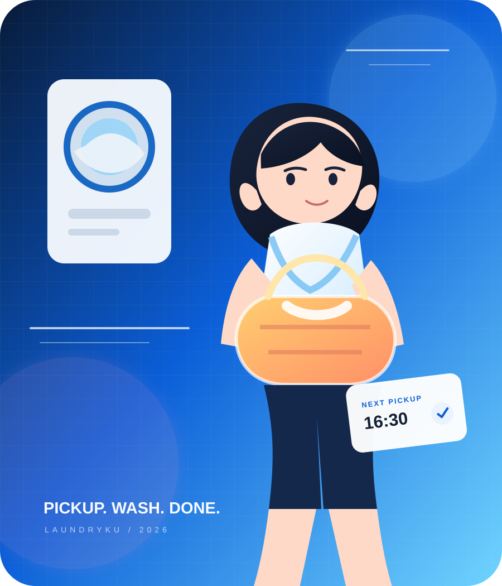
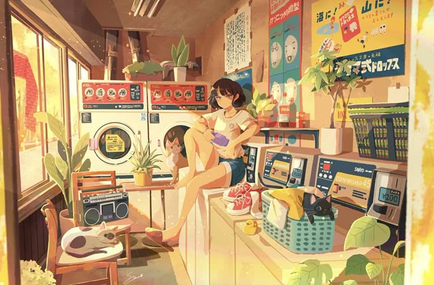
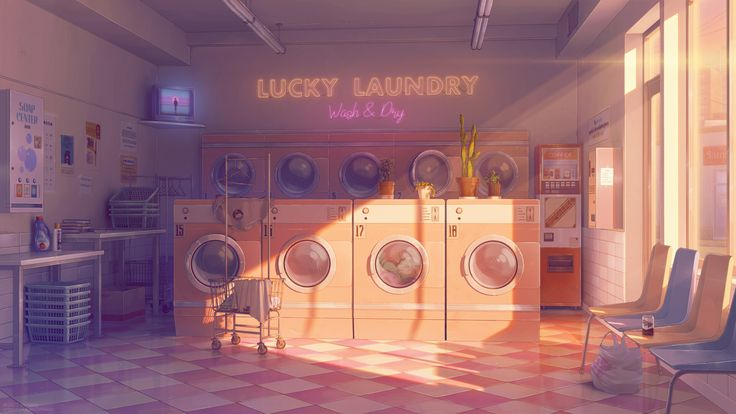
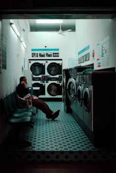
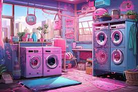
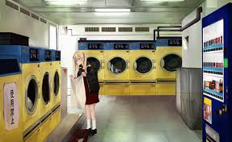

Find your clean crew.
Cari laundry berdasarkan area, rating, layanan, dan harga tanpa pindah-pindah halaman.
⌕Ciputat5 laundry nearby
Cari mitra, pilih layanan, buat pesanan, lalu pantau progresnya. Semua dibuat supaya rutinitas laundry hilang dari daftar hal yang harus kamu pikirkan.

Laundry seharusnya sesederhana pilih, titip, pantau, selesai.
Karena yang dibutuhkan bukan aplikasi yang ramai, tapi sistem yang membuat pelanggan, mitra laundry, dan admin bergerak di alur yang sama tanpa saling mengganggu.
SEESetiap fitur dibangun mengikuti perjalanan laundry nyata—bukan sekadar menambah menu.
Cari laundry berdasarkan area, rating, layanan, dan harga tanpa pindah-pindah halaman.
Pilih mitra, layanan, dan estimasi berat. Selesai dalam satu flow.
Dari pickup sampai selesai, status ditampilkan sebagai timeline yang gampang dibaca.
Semua transaksi tersimpan dengan status, berat, layanan, tanggal, dan nilai pesanan.
Dari discovery sampai cucian kembali, seluruh perjalanan dibuat terasa satu cerita.

Bandingkan area, rating, layanan, dan harga. Tidak perlu mulai dari chat satu per satu.

Yang penting bukan banyak fitur. Yang penting pengguna selalu tahu harus melakukan apa berikutnya.
LAUNDRYKU PRODUCT PRINCIPLE
OPEN
OPEN
OPENTemukan mitra berdasarkan kebutuhanmu.
Pilih layanan dan buat pesanan.
Pantau progres cucian secara jelas.
Cucian selesai, histori tetap tersimpan.
Masuk ke salah satu role dan lihat seluruh alurnya berjalan.